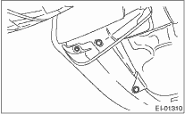
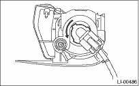

LIGHTING SYSTEM > Front Fog Light Bulb
REMOVAL
1. Disconnect the ground cable from the battery.
2. Disengage the three clips, and then turn over the mud guard.

3. Remove the spring retainer then detach the fog light bulb.
